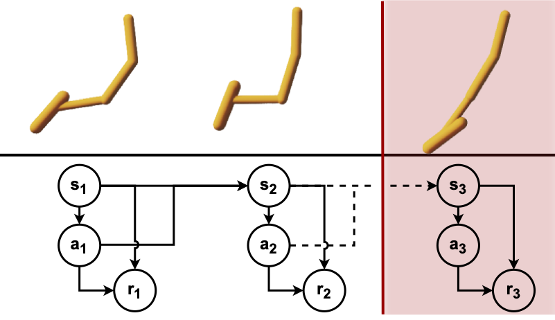
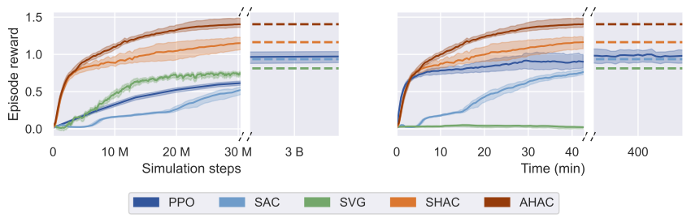
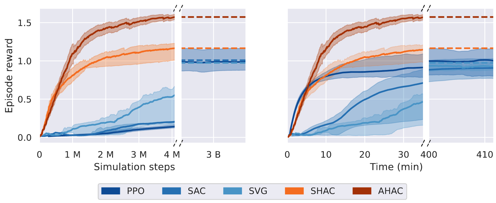

Adaptive Horizon Actor Critic

In our work we analyze the issues with first-order gradient estimation in differentiable simulation. We establish the under finite samples, these types of gradients exhibit empirical bias, particularly under stiff dynamics which ocur during contact. To address that we develop a new model-based reinforcement learning algorithm, Adaptive Horizon Actor-Critic (AHAC), which adaptively adjusts the horizon of the model-based optimization to avoid contact. This allows it to reduce bias and obtain asymptotically more optimal policies.

Results

Results from the Ant task show that AHAC outperforms all baselines in terms of asymptotic reward. Since we are mainly comparing against zeroth-order baselines, we normalize all rewards to the maximum achieved by PPO. Even though Ant is widely considered a solved task, we find that AHAC achieves 41% more reward than PPO, even if PPO is left to train for 3B timesteps.
Qualitatively, AHAC achieves more optimal and natural looking behaviour than our main baseline, PPO.

Aggregate asymptotic statistics across all tasks. The left figure shows 50\% IQM with 95\% CI of asymptotic episode rewards across 10 runs. We observe that AHAC is able to achieve 40\% higher reward than our best MFRL baseline, PPO. The right figure shows score distributions as suggest by \citep{agarwal2021deep} which lets us understand the performance variability of each approach. Our proposed approach, AHAC, outperforms baselines even at the worst case, strengthening the case for first-order methods.
